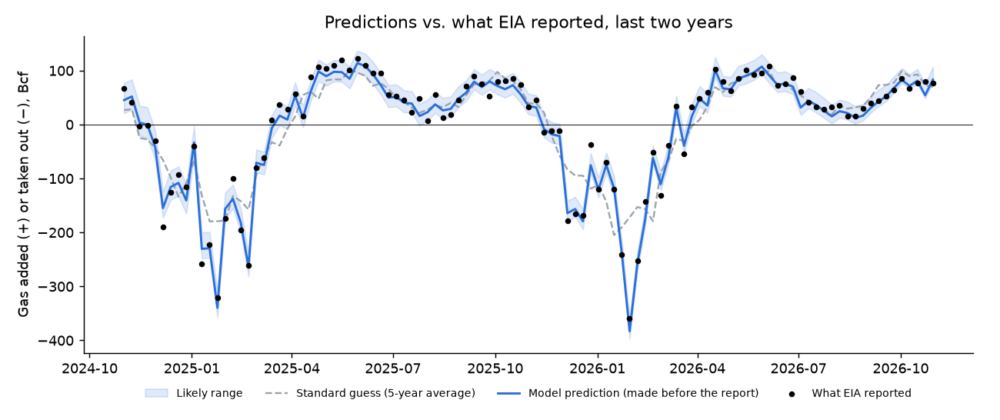
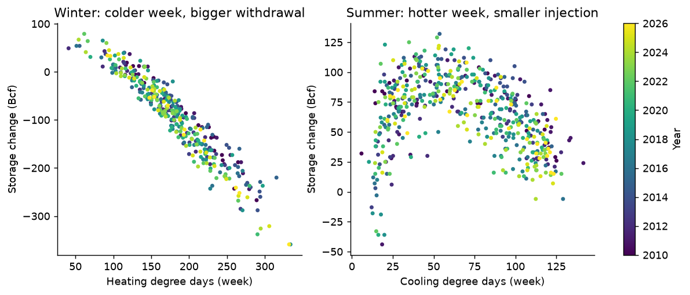
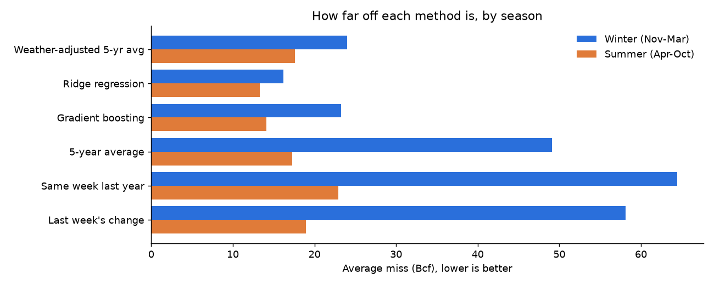
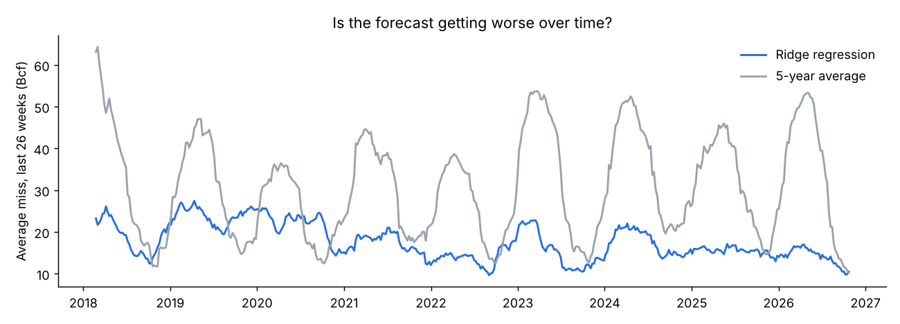

Predicting the weekly US natural gas storage number
Every Thursday, the US Energy Information Administration (EIA) reports how much natural gas was added to or taken out of underground storage the week before. Gas prices jump when the number surprises traders. This project predicts the number from the weather before EIA publishes it.
What the numbers mean
- Bcf means billion cubic feet of natural gas. One Bcf is enough to heat about 15,000 US homes for a year. The whole country uses about 90 Bcf a day.
- US underground storage holds about 3,801 Bcf right now (week ending October 30).
- Positive numbers mean gas was added to storage, usually April to October: a normal week is +50 to +100 Bcf. Negative numbers mean gas was taken out, usually in winter: a cold week can be −200 Bcf or more.
- The standard guess is the average change for the same week over the past five years. It's the number every storage report is compared with.
This week's prediction
Prediction for the week ending Friday, November 6. EIA publishes the real number on Thursday, November 12 at 10:30 a.m. ET.
Likely range: +68 to +98 Bcf. The standard guess (5-year average) is +33 Bcf.
Some of the week's weather is still a forecast, so the real range is a little wider.
How accurate is it?
Every prediction was made using only data available before that week's report. The model was designed using 2018-2021 only, and the scores above come from 2022 onward, so they show how it does on weeks it has never seen.
How it works
- Measure the weather. Daily temperatures from 17 US cities show how cold or hot each week was. Cold weeks count most in the gas-heated North-East and Midwest; hot weeks count most in Texas, the South and California, where power plants burn gas for air conditioning.
- Start from the standard guess. The average for the same week over the past five years.
- Adjust for the weather. A model learns how much colder or hotter than normal weather moves storage away from the standard guess, using every past week.
- Test it fairly. Each week is predicted using only earlier data, as if it were that Thursday morning.
Every method compared
Weeks from 2022 onward. "Typical miss" is the average gap between the prediction and the real number. "Beat the standard guess" is the share of weeks it was closer than the 5-year average. "Higher or lower right" is how often it correctly said whether the real number would come in above or below the standard guess. "Inside likely range" should be about 80%.
| Method | Typical miss (Bcf) | Beat the standard guess | Higher or lower right | Inside likely range |
|---|---|---|---|---|
| My model (ridge regression) | 13.1 | 73% | 86% | 80% |
| 5-year average, adjusted for weather | 18.3 | 63% | 80% | 76% |
| Gradient-boosted trees | 16.1 | 69% | 82% | 73% |
| Standard guess (5-year average) | 31.3 | 0% | – | 77% |
| Same week last year | 40.2 | 39% | 53% | 78% |
| Same as last week | 35.1 | 46% | 65% | 76% |
What I found
- Winter is where weather matters most. From November to March the model misses by 15 Bcf on average; the standard guess misses by 54. Cold snaps cause the big swings, and the temperature data catches them.
- Summer is harder to beat. From April to October the model misses by 12 Bcf; the standard guess misses by 17. Summer weeks swing less, so the standard guess is already closer, and summer storage also depends on things the model doesn't see, like gas exports and power-plant demand.
- Simple beat fancy. A straightforward linear model (ridge regression) beat a more complex one (gradient-boosted trees).
- Big misses point to real events. The largest was February 2021, Winter Storm Uri: frozen gas wells cut supply, so storage fell much further than the cold alone would suggest.
Weeks the weather couldn't explain
Weeks where the model missed far more than usual. These usually come from events the weather can't show, like frozen wells, pipeline outages, or EIA reclassifying gas.
- Week ending Feb 19, 2021: EIA reported -338 Bcf; the model predicted -268 Bcf.
- Week ending Jun 11, 2021: EIA reported +16 Bcf; the model predicted +84 Bcf.
- Week ending Dec 30, 2022: EIA reported -221 Bcf; the model predicted -170 Bcf.
- Week ending Jan 6, 2023: EIA reported +11 Bcf; the model predicted -52 Bcf.
- Week ending Oct 13, 2023: EIA reported +97 Bcf; the model predicted +55 Bcf.
- Week ending Jan 5, 2024: EIA reported -140 Bcf; the model predicted -98 Bcf.
- Week ending Feb 2, 2024: EIA reported -75 Bcf; the model predicted -119 Bcf.
Charts



